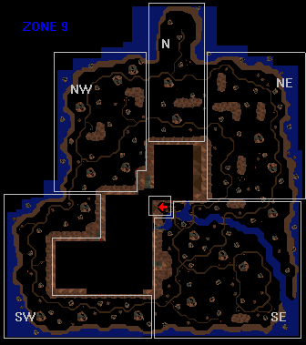

Of Lands Afar
| Betrayal at Krondor - Chapter 8 Of Lands Afar |
|
|
||
|
Rescue Pug and Gamina. | ||||
|
[HOME]
| ||||
|
Malala has imprisoned Gamina, Pug's daughter, in Timirianya.
In order to rescue Gamina, Pug has entered this alien world, only to be imprisoned there himself,
bereft of all his Spells. Gorath and Owyn must save Pug, and then help
him find his daughter. |
||||
| WALKTHROUGH Chapter 8 |

The journey begins in the NW Sector.
Look out for Rations
and Raw Manna.
Stay away from the SW Sector, until you've
freed Pug.
BASIC WALKTHROUGH:
Owyn won't be able to cast Spells, until he has found a Crystal Staff. He will
also need constant supplies of Raw Manna, in order to feed the Staff. Manna
is scarce to begin with, but once you reach the Crystal Grove in the South-East
Sector there will be plenty. Manna can be found in various places: Dwellings, Mounds
of Dirt, and Yellow Crystal Trees. Make sure you search ALL dead Enemies. Some of them
have Rations, which are quite precious here.
Pug is imprisoned in a Panth Tiandn Dwelling in the NE Sector, and Gamina is trapped
in a cage in the Riftworld Mine. Pug has left THREE MESSAGES (click on Notes above)
in the Northern Sectors, giving you most of the information you need.
PANTH TIANDNS
are easier to kill. They will suffer 50% Extra Damage from FETTERS OF RIME, EVIL SEEK,
GAMBIT OF THE EIGHT, MIND MELT, and FIRESTORM. However, they are quite IMMUNE to WRATH
OF KILLIAN, FLAMECAST, GRIEF OF 1000 NIGHTS, and SKYFIRE.
PANTATHIANS,
although formidable Spellcasters, are seemingly unable to cast Spells in Timirianya! Since they
never carry any Weapons, they will run around aimlessly, or try to escape. They will suffer normal
Damage from all Spells (except SKYFIRE, of course).
At the beginning of the Chapter Gorath and Owyn will find themselves in the NW Sector,
facing North. If they look South they will spot an edible Nethermander corpse. To the
East they can collect Manna [45] from a Tree and a Mound of Dirt. Be careful! If you
go too close to the Road East of Start, you may bump into two Panth Tiandns and a Nethermander
[Combat 15]. Follow the Road towards West, until you reach a fork in the Road.
Enter the Dwelling, and find Pug's First Note and some Manna.
You are heading towards the North Sector. Consult the MAP, and note the possibilities. If you
go on along the Northern Road you will run into THREE Combats, none of which will yield much:
three Nethermanders [Combat 08],
Consult the MAP. Obviously you can easily avoid four Panth Tiandns [Combat 10],
and three Panth Tiandn's [Combat 11] in this area, but note that you
can pick up Manna [85] from a Tree and two Mounds of Dirt here. Now head towards the North Peninsula, and
follow the Path.
Off the Path, towards East, you will find two Manna Trees [25 + 20], and three Dwellings. The
Northernmost Dwelling contains Pug's Second Note and some Manna [5]. The Easternmost Dwelling
contains an Ambush of two Panth Tiandns [Combat 36], and Rations [8].
Before you reach the end of the North Peninsula, you'll have to deal with five Panth Tiandns
[Combat 04]. When you reach the end of this Path, you will see the
SEVEN PILLARS OF KARZEEN MAK.
Stick to the Road. As soon it bends to the North-East, try going South in order to
find three Manna Trees [30+15+20]. Back on the Road, meet two Panth Tiandns and a
Nethermander [Combat 05], and two Panth Tiandns
[Combat 06]. South of the Road you can locate Manna [40]
from a Tree, and another Manna [40] from a Mound of Dirt. The Road will soon bend South.
A Dwelling on the Right (West) side of the Road is protected by a Magical Barrier. This
is Pug's Prison. If you explore the area to the West, you may find three Manna Trees
containing Manna [20 + 30 + 40]. You may also bump into five Panth Tiandns
[Combat 12], but try not to - they're guarding a Dwelling
containing a Crystal Staff (which you've surely found already).
On the Road South of Pug's Prison three Panth Tiandns are waiting
[Combat 13]. If you stick to the Road, a Mound of Dirt will
soon yield Manna [40]. If you now stick to the Road to the South, you won't encounter any Combats or
Caches before you enter the SE Sector, so explore the area to the West:
Enter the SE Sector ("Crystal Grove"). Take a good look at the Map.
Note that there is plenty of Manna all over the place, more than you'll ever need.
Before you cross the river, avail yourself of all the Manna Caches North
and East of the river - the area is practically enemy-free. The single
Dwelling here contains an Ambush, two Panth Tiandns [Combat 25].
They carry no Items, but the Dwelling contains Manna and Rations.
You can cross the river via the East Bridge or the Central Bridge. There are three Pantathians
[Combat 18] south of the East Bridge, and two Pantathians
[Combat 17] at the fork South of the Central Bridge, but all
Pantathians in this Chapter are wimps, unable to cast Spells. One of two
Dwellings South of the Central Bridge contains Manna. The Dwelling South of the West Bridge
has an Ambush of three Panth Tiandns [Combat 29]. One of them
is carrying Rations [13]. The Dwelling itself contains Manna. North of the West Bridge you
can pick up a lot of Manna, and locate the entrance to the Riftworld Mine.
It is not recommended that you enter the Mine at this stage, but if you do, please
DO NOT enter the Central Chamber, where the final Combat of this Chapter awaits you.
Without STRENGTH DRAIN you can't finish this Combat. It has also been reported to the
Webmaster that this Combat can get bugged, if you engage in it at this stage of the
game.
Your aim in this area is to locate the Cup of Rlnn Skrr. If you study the Map, you'll
note that you can avoid the majority of Combats here by sneaking along the river bank
until you reach the Dwelling containing the Cup. But then you'll avoid most of the Manna Caches
as well!
Following the Road south of the West and Central Bridges, you will soon reach a crossroads,
where three Pantathians [Combat 19] are waiting. If you enter the
closest Dwelling, a lone Panth Tiandn will attack [Combat 27]. He
is carrying Rations [7], and the Dwelling itself contains Rations [3].
CROSSROADS GUIDE:
The NW Road leads to the West and Central Bridges (see above).
The NE Road leads to the
East Bridge. A Dwelling on this Road contains an Ambush of three Panth Tiandns
[Combat 28], not worth fighting unless Owyn still doesn't have a
Crystal Staff (not likely!).
The
SE Road leads towards the Dwelling containing the Cup. You will soon reach the "Circle
Road" and fight two Pantathians [Combat 20]. In a Dwelling North
of the Combat site, a lone Panth Tiandn [Combat 32] is hiding.
The Dwelling contains Rations [6] and Herbal Pack [8]. If you want to pick up more Rations, an
Ambush Dwelling in the North will yield three Panth Tiandns [Combat 31],
and Rations [12]. The Cup of Rlnn Skrr is stored in a Dwelling near the South-East corner of
this Sector. You'll have to fight three Pantathians and two Nethermanders
[Combat 23] near a fork in the Road, and four Pantathians and one
Nethermander [Combat 24] when you try to enter the Dwelling. Besides
the Cup, the Dwelling contains Rations and Manna. You can also pick up more Rations from another
Dwelling nearby.
This area is not very exciting. You can pick up some Rations and Manna (from Nethermander
Corpses, Dwellings, and Crystal Trees). You can also tackle a lone Panth Tiandn
[Combat 34] in an Ambush Dwelling, and two Panth Tiandns
[Combat 35] on the Road. Yout main purpose here is to locate
two Mounds of Dirt south of the Road in the South-West corner of the Sector. The contents
vary between versions:
In version 1.02 the Southern Mound contains
Valheru Armor (Bless #1) [100],
STRENGTH DRAIN, and Manna [500].
In the original 1.01 (diskette) version the Northern Mound contains
TWO suits of Valheru Armor (Bless #3) [100]. The single suit
in the Southern Mound is also (Bless #3).
Armed with your STRENGTH DRAIN you are now ready to enter the Riftworld Mine.
The Mine is almost empty. On entering you'll have a choice of going Left/West or Right/East.
Either way four Pantathians block your path [Combat 04 LEFT -
Combat 03 RIGHT]. Go Left - the Eastern part of the Mine is totally
empty. A small room in the South-West corner has a silly little Bush containing Rations [3], but
you'll have to kill two Pantathians and two Nethermanders first [Combat 05].
A Western corridor is guarded by five Panth Tiandns [Combat 01], easily
avoided unless you're dying for the Rations [18] you can pick up from their corpses.
Wind
Elementals can ONLY be killed with STRENGTH DRAIN.
IMPORTANT: If you use INFINITY POOL before Casting, you can Drain 30 points of Strength, and
easily kill the Right Elemental!

KNOW YOUR ENEMIES!
 NETHERMANDERS
won't die easily. If you
allow them to step right next to you, they will BITE! They are IMMUNE to all Spells,
except FETTERS OF RIME (No Damage, Freeze normal), GAMBIT OF THE EIGHT, and FIRESTORM.
NETHERMANDERS
won't die easily. If you
allow them to step right next to you, they will BITE! They are IMMUNE to all Spells,
except FETTERS OF RIME (No Damage, Freeze normal), GAMBIT OF THE EIGHT, and FIRESTORM.
A lot of Combats can be avoided, if you study the MAPS carefully. If you now go South, you will
be able to pick up Manna [35] from some Mounds of Dirt by the roadside, but first you'll have
to fight two Nethermanders [Combat 14]. Don't go South - the SW
Sector is quite impassable at this stage. Go North, past the fork, and fight two Panth Tiandns and
two Nethermanders [Combat 07]. One of the Panth Tiandns is carrying
Rations [11]. Go on North, and follow a Path to the East. Enter the Dwelling at the end of this
Path, and find a Crystal Staff [11] and some Manna [15]. Don't miss the two Crystal Trees - you
can harvest Manna [60] here. Now charge Owyn's new-found Crystal Staff with Manna, and make sure
it is 100% charged. [Note: You will have to recharge the Staff regularly, after Owyn has cast a
Spell.]
three Panth Tiandns and one Nethermander [Combat 01],
and four Panth Tiandns [Combat 02]. You might be better off
heading East, where two Dwellings will yield a MAP and some Manna [10]. Try to stay away from
three Panth Tiandns and two Nethermanders [Combat 09] in this area,
but if you bump into them, make sure you don't miss a Manna Tree [30] west of the Combat site.
If you now go South, you will
be able to pick up Manna [35] from some Mounds of Dirt by the roadside, but first you'll have
to fight two Nethermanders [Combat 14]. Don't go South - the SW
Sector is quite impassable at this stage. Go North, past the fork, and fight two Panth Tiandns and
two Nethermanders [Combat 07]. One of the Panth Tiandns is carrying
Rations [11]. Go on North, and follow a Path to the East. Enter the Dwelling at the end of this
Path, and find a Crystal Staff [11] and some Manna [15]. Don't miss the two Crystal Trees - you
can harvest Manna [60] here. Now charge Owyn's new-found Crystal Staff with Manna, and make sure
it is 100% charged. [Note: You will have to recharge the Staff regularly, after Owyn has cast a
Spell.]
three Panth Tiandns and one Nethermander [Combat 01],
and four Panth Tiandns [Combat 02]. You might be better off
heading East, where two Dwellings will yield a MAP and some Manna [10]. Try to stay away from
three Panth Tiandns and two Nethermanders [Combat 09] in this area,
but if you bump into them, make sure you don't miss a Manna Tree [30] west of the Combat site.
Two Houses in the area contain Ambushes [Combats 26 & 33].
Midway between them, a "safe" House contains Pug's Third Note and Manna [30]. A secondary
Road (West)
offers an encounter with four Panth Tiandns [Combat 16]. South of
this Combat site you will find three Manna Trees [20 + 20 + 25].
The SW Road leads towards the South-West Sector.
Near a fork where a South-Western Path brances off the Main Road, you'll meet three Pantathians
[Combat 21]. If you follow the Path, you'll run into
four more Pantathians [Combat 22]. At the end of the Path, if you enter
the Dwelling, two Panth Tiandns [Combat 30] will attack, one of
them carrying Rations [6]. Don't try to enter the South-West Sector - it is suicidal.
 Once you have the Cup, retrace your path all the way to Dhatsavan's Pillar in the North.
Dhatsavan will lift the barrier surrounding Pug's Prison, and the barrier surrounding the
South-West Sector. After you've talked to Dhatsavan, click his Pillar again, and you will
be teleported to Pug's Prison. Use the Cup to transfer Owyn's Spells to Pug. Go back North
and talk to Dhatsavan for the last time - he will tell you where Gamina is being held.
Return to the Crystal Grove via the South-West Sector, which can now be travelled freely.
Once you have the Cup, retrace your path all the way to Dhatsavan's Pillar in the North.
Dhatsavan will lift the barrier surrounding Pug's Prison, and the barrier surrounding the
South-West Sector. After you've talked to Dhatsavan, click his Pillar again, and you will
be teleported to Pug's Prison. Use the Cup to transfer Owyn's Spells to Pug. Go back North
and talk to Dhatsavan for the last time - he will tell you where Gamina is being held.
Return to the Crystal Grove via the South-West Sector, which can now be travelled freely.
 Enter the Central Chamber, where Gamina is imprisoned.
Enter the Central Chamber, where Gamina is imprisoned.
In order to save Gamina you must fight
three Pantathian wimps,
and two Wind Elementals [Combat 02].
Wind Elementals REGAIN their Strength at the beginning of each new Combat Round! The maximum
amount of Drain possible is 20, meaning that if a Wind Elemental's Strength is greater than 20,
both Owyn and Pug must cast STRENGTH DRAIN at him during the same Round. In this Combat the Left
Elemental has Strength=17, and is easily killed. The Right Elemental, however, has Strength=29.
He'll refuse to die unless Owyn and Pug drain him during one Round. (The
Webmaster is indebted to Fredrik Eriksson [BaKHacker] for figuring this out.)

Alex Moffatt was first to point out that in this version Chapter 8 can be finished
without finding the Cup and rescuing Pug. All you need is the STRENGTH DRAIN Spell, which
Owyn can easily find in Dimwood, as early as Chapter 1! This is not recommended. PUG will
be with you in Chapter 9, but he will have NO SPELLS, and none of the Characters will have
Valheru Armor. The Webmaster used to think that Chapter 9 couldn't possibly be finished
with only one Spellcaster, but various correspondents have since convinced him that it
can actually be done. ,
,
 and
and

will return in Chapter 9. [TOP OF PAGE]
[TOP OF PAGE]
 [NEXT]
[NEXT]